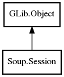

- Session
- accept_language
- accept_language_auto
- async_context
- http_aliases
- https_aliases
- idle_timeout
- max_conns
- max_conns_per_host
- proxy_uri
- ssl_ca_file
- ssl_strict
- ssl_use_system_ca_file
- timeout
- tls_database
- use_ntlm
- use_thread_context
- user_agent
- Session
- abort
- add_feature
- add_feature_by_type
- auth_required
- cancel_message
- flush_queue
- get_async_context
- get_feature
- get_feature_for_message
- get_features
- kick
- pause_message
- prefetch_dns
- prepare_for_uri
- queue_message
- redirect_message
- remove_feature
- remove_feature_by_type
- requeue_message
- send_message
- unpause_message
- would_redirect
- authenticate
- connection_created
- request_queued
- request_started
- request_unqueued
- tunneling
Session
Object Hierarchy:
Description:
All known sub-classes:

Namespace: Soup
Package: libsoup-2.4
Content:
Properties:
- public string accept_language { set; owned get; }
- public bool accept_language_auto { set; get; }
- public MainContext async_context { construct set; get; }
- public string[] http_aliases { set; owned get; }
- public string[] https_aliases { set; owned get; }
- public uint idle_timeout { set; get; }
- public int max_conns { set; get; }
- public int max_conns_per_host { set; get; }
- public URI proxy_uri { set; owned get; }
- public string ssl_ca_file { set; owned get; }
- public bool ssl_strict { set; get; }
- public bool ssl_use_system_ca_file { set; get; }
- public uint timeout { set; get; }
- public TlsDatabase tls_database { set; owned get; }
- public bool use_ntlm { set; get; }
- public bool use_thread_context { set; get; }
- public string user_agent { set; owned get; }
Creation methods:
- protected Session ()
Methods:
- public void abort ()
- public void add_feature (SessionFeature feature)
- public void add_feature_by_type (Type feature_type)
- public virtual void auth_required (Message msg, Auth auth, bool retrying)
- public virtual void cancel_message (Message msg, uint status_code)
- public virtual void flush_queue ()
- public weak MainContext get_async_context ()
- public weak SessionFeature get_feature (Type feature_type)
- public weak SessionFeature get_feature_for_message (Type feature_type, Message msg)
- public SList<SessionFeature> get_features (Type feature_type)
- public virtual void kick ()
- public void pause_message (Message msg)
- public void prefetch_dns (string hostname, Cancellable? cancellable, AddressCallback? callback)
- public void prepare_for_uri (URI uri)
- public virtual void queue_message (owned Message msg, SessionCallback? callback)
- public bool redirect_message (Message msg)
- public void remove_feature (SessionFeature feature)
- public void remove_feature_by_type (Type feature_type)
- public virtual void requeue_message (Message msg)
- public virtual uint send_message (Message msg)
- public void unpause_message (Message msg)
- public bool would_redirect (Message msg)
Signals:
- public virtual signal void authenticate (Message msg, Auth auth, bool retrying)
- public signal void connection_created (Object connection)
- public signal void request_queued (Message msg)
- public virtual signal void request_started (Message msg, Socket socket)
- public signal void request_unqueued (Message msg)
- public signal void tunneling (Object connection)